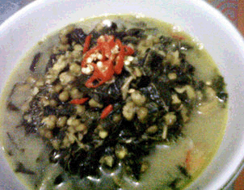
Alias sayur daun singkong + kacang ijo Setiap masak sayur ini selalu terkenang seorang teman lama ... :))
Bahan-bahan :
-Daun Singkong 2 ikat
-Kacang Hijau 100 gram
-Bawang Merah 5 siung
-Bawang Putih 3 siung
-Kemiri 5 biji
-Kunyit 1 ruas
-Daun Salam 1 lembar
-Lengkuas (Laos) 1 ruas
-Serai 1 batang
-Santan Cair 100 ml
-Santan Kental 100 ml
-Garam secukupnya
-Gula Merah secukupnya
-Penyedap Rasa (MSG) secukupnya
-Lada (Merica) 1 sendok teh
-Cabe Rawit Merah secukupnya
Cara membuat :
1. Rebus daun singkong hingga matang. Kacang hijau direbus hingga 1/2 matang. Sisihkan.
2. Haluskan semua bumbu. Setelah itu tumis sampai harum. Masukkan daun salam, serai, lengkuas.
3. Tambahkan santan cair, masak hingga mendidih.
4. Setelah mendidih, masukkan daun singkong dan kacang hijau yang sudah direbus sebelumnya, masak sampai kacang hijau agak merekah.
5. Setelah kacang hijau matang. Tambahkan santan kental. Masak sebentar.
6. Sajikan dengan irisah cabe rawit merah.
Back
Sayur Singkong Santan Pedas
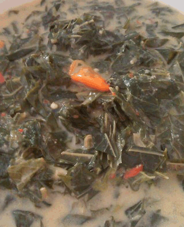
Awal jadi suka sama masakan ini gara2 suka jajan di kantor..... rasanya gurih2 pedes... begitu sempet masak, nyobain deh ... sebenernya ada 2 resep yg pernah aku coba, tapi yg ini kyknya buat aku udah passss.. :p
Bahan-bahan :
-Daun Singkong 2 ikat
-Santan kental 200 ml
-Bawang Merah 5 siung
-Bawang Putih 3 siung
-Cabai Rawit Merah 3 buah
-Cabai keriting merah 3 buah
-Kemiri 3 buah
-Cabai (Cabe) Rawit Hijau 3 buah
-Daun Salam 2 lembar
-Garam secukupnya
Cara membuat :
1. Siangi daun singkong, lalu rebus +/- 10 menit. Tiriskan, kemudian peras dan potong2. Sisihkan.
2. Haluskan bawang merah, bawang putih, cabe rawit merah, cabe merah keriting dan kemiri.
3. Tumis bumbu yang sudah dihaluskan, lalu tambahkan daun salam. Setelah bumbu matang, tambahkan santan kental yang sudah dicampur air menjadi 1 L. (santan kental 200 ml + air 800ml)
4. Setelah santan mendidih, masukkan daun singkong. Tambahkan garam sesuai selera. Masukkan cabe rawit utuh ke dalam sayur.
5. Didihkan hingga matang dan air berkurang. Lalu sajikan.
Back
Sayur Daun Singkong Koe...
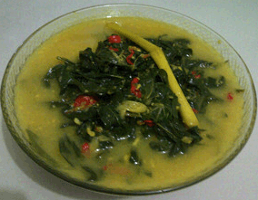
Rasanya, gurih, pedas ... nikmat pastinya :) #InspirasiBukaPuasa
Bahan-bahan :
-Daun Singkong 3 ikat
-Kelapa 1 buah
-Kunyit 1 ruas
-Jahe 1 ruas
-Daun Jeruk 3 buah
-Bawang Merah 5 siung
-Bawang Putih 5 siung
-Cabai (Cabe) Merah 7 buah
-Kemiri 4 biji
-Garam 1 sendok teh
-Gula Pasir 1 sendok makan
-Gula Merah secukupnya
-Serai 1 buah
-Royco secukupnya
Cara membuat :
1. Caranya : Petik Daun singkong yang muda , cuci bersih , sisihkan. Santan Kental dari satu butir kelapa , rebus , sisihkan.
2. Bumbunya : 1. Bawang merah, bawang putih, kunyit yang sudah dibakar, kemiri, jahe yg sudah di bakar, cabe merah yg sudah direbus, garam, gula merah, ulek sampe halus ... 2. Panaskan minyak goreng kira2 dua sendok makan. 3. Lalu tumis semua bumbu tadi hingga harum baunya. 4. Lalu masukkan daun singkong yang sudah di cuci bersih. 5. Tambahkan santan, sereh, gula pasir, daun jeruk dan diaduk rata hingga mendidih dan matang. 6. Sayur daun singkong siap dihidangkan ... cocok untuk berbuka puasa ... Selamat mencoba ya ... 7. Rasanya Ok banget d .. :)
Back
DAUN UBI TUMBUK ala Tapanuli
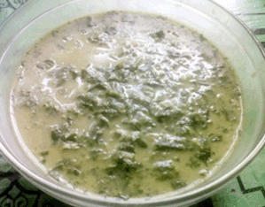
Daun ubi tumbuk jg adalah makanan khas org Tapanuli..tpi biasanya mrka tdk menggunakan santan.dan yg pasti ketemu lg dgn ..tarrraaa..kincong.. daun ubi tumbuk dgn kincong + sambal terasi/sambal tuk tuk+ ikan asin goreng...hmmmm...yummmieeee #InspirasiBukaPuasa #68ResepIndonesia
Bahan-bahan :
-daun ubi 1 ikat
-kincong 1 buah
-takokak 10 butir
-Serai 1 batang
-Daun Salam 1 helai
-Lengkuas (Laos) 1 ruas
-Cabai (Cabe) Rawit Hijau 10 buah
-Bawang Merah 5 siung
-Bawang Putih 2 siung
-Jahe 1 ruas
-Ebi secukupnya
-Garam secukupnya
-Tomat secukupnya
-Santan 500 ml
Cara membuat :
1. siapkan bahan-bahannya
2. cabai rawit,bwng mrh, bwng pth,jahe,ebi tumbuk jd satu di dalam lesung/antan..setelah agak halus masukkan takokak dan kincong tumbuk rata kemudian masuukan daun ubi.tumbuk lagi sampai stngh hancur dan tercampur rata dgn bumbu.
3. panaskan air didalam panci bersama serai,lengkuas dan daun salam.beri garam..setelah mendidih masukkan daun ubi yg sdh ditumbuk tadi..masak sampai daun ubi td setengah matang dan air rebusan sdkt kering.masukkan santan kental aduk trs smpai mendidih jgn smpai santannya pecah.kmdian masukkan tomat kedlm masakan.
4. aduk terus masakan smpai mendidih dan matang.angkat siap disajikan
Back
Bobor Daun Singkong & Teri
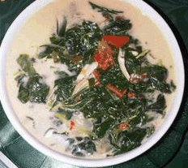
Sayur bobor ini enak disajikan saat makan siang, karena berkuah dan segar serta kandungan zat besi dalam daun singkong cukup tinggi.
Bahan-bahan :
-Daun Singkong 1 ikat
-Ikan Teri secukupnya
-Santan Encer 2 cangkir
-Tomat 1 buah
-Lengkuas (Laos) 3 cm
-Daun Salam 3 lembar
-Minyak Goreng 2 sendok makan
-Air secukupnya
-Bumbu halus
-Bawang Putih 1 siung
-Bawang Merah 3 siung
-Cabai (Cabe) Merah Keriting 3 buah
-Cabai (Cabe) Rawit Merah 3 buah
-Garam secukupnya
-Gula Pasir secukupnya
Cara membuat :
1. Rebus daun singkong dalam air mendidih, sampai setengah matang, tiriskan, lalu diiris sangat kasar
2. Ulek semua bumbu halus, panaskan minyak goreng, lalu tumis bumbu halus, lengkuas, daun salam sampai harum
3. Masukkan irisan tomat, tumis sebentar
4. Masukkan teri, tumis sebentar
5. Tuang santan, aduk sebentar
6. Masukkan daun singkong, adukrata, bila santan kurang, bisa ditambahkan air, (cicipi rasanya)
7. Tunggu sampai mendidih, jika daun sudah layu dan rasa sudah mantap, matikan api, angkat dan sajikan
Back
Bola Bola Daun Singkong
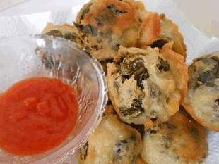
Seminggu yg lalu ibu mertuaku datang, dan beliau mbuat gorengan dr daun singkong ini,, #ManisnyaCintaIbu
Bahan-bahan :
-Daun Singkong 1 ikat
-Tahu 3 biji
-Bawang Putih 2 siung
-Garam secukupnya
BAHAN KULIT
Tepung Terigu 150 gram
Bawang Putih 2 siung
Ketumbar 1 sendok teh
Kemiri 2 biji
Garam secukupnya
Penyedap Rasa (MSG) secukupnya
Air secukupnya
Minyak Goreng secukupnya
Cara membuat :
1. rebus daun singkong hingga matang, lalu tiriskan sambil di tekan2 hingga air ny habis.
2. haluskan tahu dan bawang putih, beri garam. campur daun singkong dan tahu, bentuk bola bola.
3. adonan kulit : haluskan bawang putih, ketumbar dan kemiri. larutkan tepung terigu dan bumbu halus, beri garam dan penyedap.
4. celupkan bola2 daun singkong k dalam bahan kulit. lalu goreng hingga matang. hidangkan dg saus sambal ato cabe rawit...
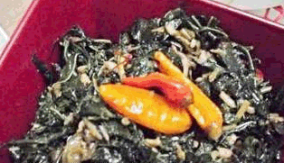
Masakan kali ini request dari suami, baru pertama kali buat dan langsung suka hihihi..resepnya saya ambil dari sajian sedap, dengan penyesuaian sesuai bahan yang ada di rumah
Bahan-bahan :
-Daun Singkong 1 ikat
-Minyak Goreng 1 sendok makan
-Daun Salam 1 helai
-Lengkuas (Laos) 1 cm
-Cabai (Cabe) Merah 1 buah
-Cabai (Cabe) Rawit Merah 3 buah
-Ikan Teri Nasi secukupnya
-Garam secukupnya
-Gula Pasir secukupnya
-Lada (Merica) secukupnya
-Air secukupnya
bumbu halus
Bawang Merah 4 siung
Bawang Putih 2 siung
Terasi secukupnya
Cara membuat :
1. Panaskan minyak, tumis bumbu halus, daun salam, dan lengkuas sampai harum. Masukkan cabai merah besar yang sudah diiris dan cabai rawit. Aduk sampai layu. Masukkan teri nasi. Aduk rata
2. Masukkan daun singkong, garam, gula pasir, dan merica. Aduk rata. Tuang air. Masak sampai matang dan air mengering. Angkat, sajikan.
Back
Gulai Ikan Salai Daun Singkong
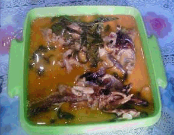
Ini dia masakan khas riau, terbuat dari ikan salai. Bisa salai lais, baung dll. Karna ikan salai nya lumayan mahal, masakan ini pun jg sedikit agak mahal dijual di RM Khas Melayu.
Bahan-bahan :
-Ikan Asap 200 gram
-Daun Singkong 1 ikat
-Cabai (Cabe) Merah 5 buah
-Bawang Merah 3 siung
-Bawang Putih 2 siung
-Jahe 1 cm
-Kunyit 1 cm
-Lengkuas (Laos) 1 ruas
-Serai 1 batang
-Ketumbar secukupnya
-Lada (Merica) secukupnya
-Tomat secukupnya
-Santan 600 ml
Cara membuat :
1. Haluskan cabe, bawang merah, bawang putih, jahe, kunyit, ketumbar, merica.
2. Tumis bumbu halus. Masukkan lengkuas dan serai.
3. Tambahkan santan, biarkan mendidih. Masukkan ikan salai yang telah di rendam air panas.
4. Tambahkan daun singkong. Masak sebentar. Tambahkan tomat yang telah dipotong2. Sajikan
Back
Tumis Daun Singkong Suka-Suka
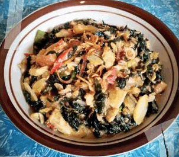
Bermodalkan sisa-sisa bahan makanan di kulkas, jadilah resep ini :)
Bahan-bahan :
-Daun Singkong 2 ikat
-Tempe 50 gram
-Tempe Semangit 25 gram
-Ikan Teri 50 gram
-Santan 50 ml
-Tomat 1 buah
-Cabai (Cabe) Merah 5 buah
-Cabai (Cabe) Rawit 10 buah
-Bawang Merah 5 siung
-Bawang Putih 7 siung
-Lengkuas (Laos) 1 mm
-Daun Jeruk 2 lembar
-Daun Salam 1 lembar
-Gula Merah secukupnya
-Garam secukupnya
-Merica (Lada) Bubuk secukupnya
-Minyak Goreng secukupnya
-Penyedap Rasa (MSG) secukupnya
Cara membuat :
1. Tumis bawang merah, bawang putih, daun salam, daun jeruk, cabai, tomat dan lengkuas hingga harum. Lalu masukkan tempe dan teri, masak hingga berubah warna
2. Masukkan daun singkong yang sudah direbus, aduk hingga merata, lalu masukkan santan.
3. Tambahkan gula merah, garam, merica bubuk dan penyedap rasa. Masak hingga santan menyusut.
4. Siap disajikan :)
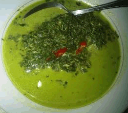
Akhir minggu sambil belajar beberapa resep masakan mandailing, resep daun ubi ini banyak variasi.
Bahan-bahan :
-Daun Ubi 1 ikat
-Kincung/Kecombrang 1 buah
-Cabai (Cabe) Merah 2 buah
-Rimbang/Takokak secukupnya
-Bawang Merah 3 siung
-Ebi secukupnya
-Kelapa 1/2 buah
-Serai 1 batang
-Garam secukupnya
-Daun Salam 2 lembar
-Lengkuas (Laos) 2 iris
Cara membuat :
1. Peras santan dari 1/2 bh kelapa - Tumbuk daun ubi, kincung & rimbang - Keprek serai & laos - Iris Bwg merah & Cabe merah
2. Tuangkan santan & daun ubi yg tlh tumbuk tadi - Masukkan irisan bwg merah, cabe merah, laos, serai, garam lalu tutup panci, masak hingga mendidih.
Back
Sayur Daun Singkong Beubeuk Teri
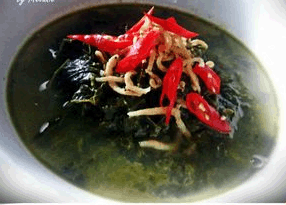
Ini sayur favorite-ku, resep ini ak dapat dr ibuku, ibuku dr nenekku (resep turun temurun) mungkin sbagian orang ada yg sdh tau terutama orang sumatra, masakan ini jg favorite kakekku jg yg berasal dr sumatra (melayu).
Bahan-bahan :
-Daun singkong, dibeubeuk (ditumbuk) 2 ikat
-Teri nasi, goreng kering 70 gram
-Santan kental 600 ml
-Air 1300 ml
-Bawang merah 8 siung
-Bawang putih 2 siung
-Tomat 1 buah
-Daun salam 1 lembar
-Laos, digeprek 5 cm
-Kaldu Sapi Bubuk 1 bungkus
-Garam, gula, dan msg secukupnya
-Cabe rawit keriting (untuk pelengkap) 3 buah
Cara membuat :
1. Siapkan smua bahan-bahan yang diperlukan.
2. Daun singkong dibeubeuk, teri nasi digoreng kering, dan santan disiapkan. Haluskan bawang merah, bawang putih, sisihkan. Tomat diiris-iris,satukan bersama bumbu halus.
3. Didihkan air ke dalam panci, setelah mndidih masukkan bumbu halus, irisan tomat, daun salam dan laos. Stelah bumbu matang dan harum, masukkan daun singkong beubeuk. Masak hingga matang, masukkan santan kental, garam, gula, msg dan kaldu sapi bubuk. Didih
4. Setelah mndidih masukkan sebagian teri nasi yg sdh digoreng kering td, matikan api.
5. Sajikan sayur daun singkong beubeuk ke dalam mangkok dan taburi dengan sisa teri td dan sdikit potongan cabe keriting merah setiap penyajian.
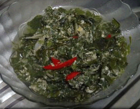
Alternatif memasak daun singkong selain dibuat lalapan atau gulai...dimakan dengan ikan asin goreng wuiihh sedepp..
Bahan-bahan :
-Daun Singkong 1 ikat
-Telur Ayam 1 butir
-Bawang Merah 3 butir
-Bawang Putih 2 siung
-Cabe Merah 1 buah
-Minyak Goreng (untuk menumis) secukupnya
-Air 1 cangkir
-Merica Bubuk 1/4 sendok teh
-Garam secukupnya
-Gula Pasir secukupnya
-Penyedap Rasa (jika suka) secukupnya
Cara membuat :
1. Daun singkong dipetiki daun mudanya. Lalu rebus hingga lunak. Angkat, tiriskan. Setelah dingin, iris halus. Sisihkan.
2. Iris halus bawang merah, bawang putih dan cabe. Lalu tumis sampai wangi.
3. Masukkan daun singkong, tumis sebentar. Lalu tuangi air, aduk rata.
4. Kocok telur (seperti bikin dadar), lalu masukkan ke rebusan sayur sambil diaduk-aduk agar tidak menggumpal. Beri bumbu, aduk rata.
5. Masak sambil ditutup hingga sayur matang. Angkat.
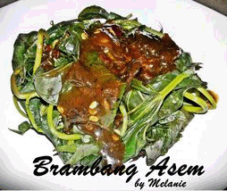
Suami request daun ubi rebus bumbu rujak, untung dkebun bnyk tanaman ubi. Brhubung ga tau bumbunya apa, akhirnya cari info dr mertua dan mbah Google deh, trs ak modif sdikit ^^
Bahan-bahan :
-Daun ubi, siangi 3 ikat
-Bawang merah, bakar 7 siung
-Bawang putih, bakar 2 siung
-Cabe rawit, bakar 4 buah
-Cabe keriting, bakar 2 buah
-Terasi, bakar 1 buah
-Gula merah 2 buah
-Asam jawa, ambil airnya 2 sendok makan
-Garam secukupnya
Cara membuat :
1. Didihkan air, masukkan sdikit garam (supaya sayur tetap hijau dan zat yg trkandunt dlm sayur tdk rusak) sbntr aja, angkat kmudian siram dgn air dingin (supaya proses pematangan sayur trhenti), sisihkan.
2. Haluskan bawang merah, bawang putih, cabe rawit, cabe keriting, garam, asam jawa dan gula merah. (Jika trlalu kental, bs dberi sedikit air)
3. Siramkan bumbu yg dhaluskan td di atas daun ubi yg sdh drebus td. Sajikan.. suegeer asemnya..
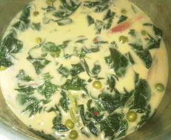
#MasakanSumatera Ini adalah sayur yg selalu menjadi hidangan khas org Batak yaitu daun ubi, saya gunakan daun ubi keriting.
Bahan-bahan :
-Daun Ubi Keriting 1 ikat
-Kincung 1 buah
-Rimbang 20 buah
-Bawang Merah 2 buah
-Cabe Merah 3 buah
-Kemiri 1/2 buah
-Ketumbar Bubuk 1/2 sendok teh
-Ebi 1/4 cangkir
-Santan 200 ml
-Garam secukupnya
-Gula secukupnya
Cara membuat :
1. Petik daun ubi lalu cuci bersih & rebus sebentar
2. a)Giling/Blender Bwg merah, Cabe merah, Ebi, Kemiri, Ketumbar Bubuk. b) Bersihkan rimbang & belah kincung
3. Masak santan dgn bumbu serta kincung & rimbang hingga mendidih.
4. Masukkan daun ubi lalu tbhkan gula & garam secukupnya, aduk merata lalu siap dihidangkan
Back
Ubi Tumbuk tanpa Santan dan Ebi
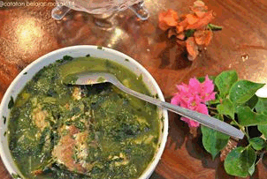
Langsuh jatuh hati menyantap kuliner sumut ini, daun ubi (singkong) tumbuk. Resep diajarkan oleh ART saat tinggal di Pematang Siantar dulu.
Bahan-bahan :
-Satu ikat daun singkong 150 gram
-Cabai rawit 5 buah
-Bawang merah 4 buah
-bawang putih 4 siung
-Bunga kecombrang/kincung 0.5 buah
-Takokak/rimbang 50 gram
-Jahe 0.5 cm
-Ikan goreng 3 potong
-Lengkuas 1 cm
-Garam 1 sendok teh
-Minyak untuk menumis secukupnya
Cara membuat :
1. Tumbuk daun singkong helai no 1-9. Batang warna merah adalah bunga kecombrang/kincung
2. Tumbuk halus bumbu: garam, bawang merah, bw putih, cabai rawit, jahe, takokak, bunga kecombrang. Tumis bumbu hingga harum
3. Rebus daun singkong tumbuk dalam air secukupnya, masukkan bumbu yang sudah ditumis, lengkuas geprek. Masukkan ikan yang sudah digoreng: kembung, dencis, dll. Cicipi rasanya. Sayur ubi tumbuk siap disantap
Tips untuk resep ini :
Dengan menumbuk daun singkong, daun yang agak tua pun dapat dimakan. Satu pucuk singkong helai daun no 1-9 dapat ditumbuk untuk sayur ini..
Back
Tumis Kelapa Daun Singkong

Bosan dengan gulai daun singkong
Bahan-bahan :
-Daun singkong 250 gram
-Kelapa parut 150 gram
-Teri medan, goreng garing 50 gram
-Garam 1 sendok teh
-Gula pasir 1 sendok teh
-Air 200 ml
Bumbu halus
-Cabe merah 5 buah
-Cabe rawit merah 5 buah
-Bawang putih 3 siung
-Bawang merah 6 butir
-Kencur 2 ruas
Cara membuat :
1. Rebus daun singkong sampai empuk. Peras airnya lalu iris halus. Sisihkan.
2. Tumis bumbu halus sebentar. Masukkan ikan teri, aduk rata.
3. Masukkan kelapa parut & daun singkong, aduk rata.
4. Tambahkan air lalu tutup. Masak hingga air kering. Aduk sesekali.
Back
Gulai Putih Pucuk ubi
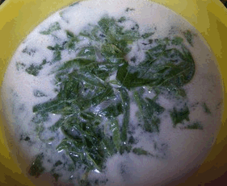
Saya asli keturunan Utara tapi besar di sumatera barat jadi saya dapet perpaduan keduanya! Orang minang suka santan sementara orang utara gak jauh dari masakan berbau pucuk ubi! Slamat memasak Mom's.
Bahan-bahan :
-Daun ubi 1 ikat
-Santan 1/4 liter
-Daun kunyit 1/2 lembar
-Bawang merah 1 siung
-Garam secukupnya
-Penyedap secukupnya
Cara membuat :
1. Bersihkan n cuci pucuk ubi muda, siapkan santan,bawang and daun kunyit
2. Aduk santan secukupnya tambahkan bawang merah n daun kunyit (Sebaiknya di aduk terus,spya santannya gak pecah)
3. Setelah mendidih masukkan daun pucuk ubi tambahkan garam sesuai selera,masak kurang lebih 1 menit saja
4. Siap disajikan bersama lauk sesuai selera anda
Back
Daun Singkong Masak Santan
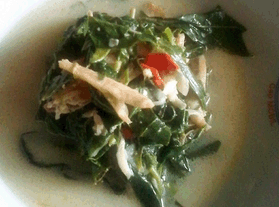
Tadinya pengen bikin buntil,tapi susah..hehe ternyata sayur ini juga dari segi rasa sama aja kaya buntil yang suka dijual di resto makanan sunda #Homemade
Bahan-bahan :
-daun singkong 1 ikat besar
-santan kental 100ml/santan instan ukuran ekonomis.
-air 1000ml
-bawang merah 3 siung
-bawang putih 2 siung
-cabe merah keriting 4 buah
-cabe rawit 4 buah
-kemiri 3 buah (sangrai)
-ketumbar 1/2 sdt
-ikan teri asin 1 ons
-laja 2 ruas
-daun salam 2 lembar
-garam secukupnya
Cara membuat :
1. pipil daun singkong,cuci bersih. rebus setengah matang. sambil menunggu tumbuk bumbu: bawang merah, bawang putih, kemiri, cabe rawit, cabe merak keriting, ketumbar.
2. setelah daun singkong stngah matang, angkat dan tiriskan. siapkan wajan panaskan minyak untuk menumis, masukan bumbu halus tumis hingga wangi.
3. tambahkan air, daun singkong, laja geprek, daun salam,garam, masak hingga daun empuk.
4. tambahkan santan sedikit demi sedikit sambil di aduk. masak hingga bumbu dan santan menyatu. sementara itu siram ikan teri asin dengan air panas, cuci sekedarnya, buang air, masukan ke dalam masakan, aduk kembali hingga menyatu.
5. jika sudah benar-benar matang, matikan kompor, dan sajikan
Tips untuk resep ini :
Kalau punya darah tinggi dan kolesterol tidak disarankan banyak-banyak ya :) konon katanya...^^ (makannya ya ga abisin satu kuali juga...hehe)
Back
Rolade Daun Singkong (Khas Ungaran)
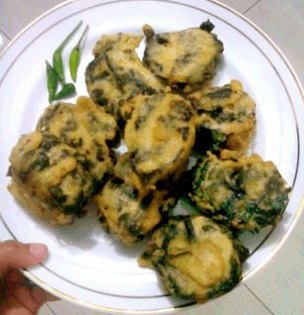
#Homemade ini rolade gorengan khas jawa tengah alias Ungaran Semarang,.Kriuk diluar lembut & nikmat di dalam ^^
Bahan-bahan :
-Tahu putih kotak besar 1 buah
-Daun singkong 2 ikat
-Minyak goreng (untuk menggoreng ) secukupnya
-Tepung terigu (membalut gorengan) 150 gr
Bumbu
-Bawang putih 3 siung
-Merica 1/2 sdt
-Gula pasir 1 sdm
-Garam 1 sdt
-telur ayam 1 butir
Pembungkus
-Daun pisang secukupnya
Cara membuat :
1. cuci bersih daun singkong, rebus dengan air sampai matang & empuk.tiriskan
2. haluskan tahu putih sampai rata (dengan tangan/ garpu) haluskan smua bumbu, campur dalam tahu sampai rata tambahkan kocokan telur
3. bersihkan lembaran daun pisang, ratakan adonan tahu pada daun pisang setebal 1 cm, timpa adonan tahu dengan daun singkong rebus yang sudah ditiriskan tadi sampai rata. gulung seperti membuat bolu gulung
4. bungkus seperti lontong & kukus 10 menit setelah di kukus potong setebal 1,5 cm menjadi beberapa bagian
5. Buat adonan tepung terigu + air + masako/royko/garam. Masukkan potongan rolade dalam adonan tepung & goreng dalam minyak panas (terendam)
6. setelah matang kekuningan, angkat tiriskan taraaaa,.....
Back
Rolade Daun Singkong Yummy
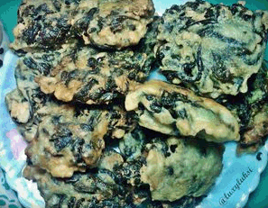
Cemilan favorit dari kecil nih, biasanya beli di tukang gorengan, tapi minyaknya kan gak sehat karena dipakai berkali2, jadi lebih baik bikin sendiri deh. mudah dan enak kok..:D
Bahan-bahan :
-daun singkong 1 ikat
-tahu putih 3 - 4 buah
-bawang putih 3 butir
-merica butir 1/2 sdm
-garam secukupnya
-royco 1/2 sdt
bahan adonan
-tepung terigu 200 gram
-tepung beras 3 sdm
-garam secukupnya
-royco 1/2 sdt
Cara membuat :
1. rebus daun singkong hingga empuk, setelah empuk, angkat tiriskan dan peras hingga habis airnya,
2. haluskan bawang putih merica
3. campur daun singkong dengan tahu putih dan bumbu halus diatas ditambah garam dan royco. aduk hingga benar2 rata sisihkan
4. untuk adonan tepungnya, campur tepung terigu, tepung beras, garam, royco dan air hingga kental, jangan terlalu encer kalau terlalu encer nanti daun singkongnya jadi menyebar. hati2 dalam menambahkan garam, karena daun singkongnya sudah diberi garam
5. ambil satu kepal adonan daun singkong lalu masukkan ke dalam adonan tepung, tapi jangan dipadatkan biar nanti hasilnya bisa kriuk2 dan matang sampai di dalam
6. siapkan minyak panas, lalu goreng adonan rolade tadi hingga matang kecoklatan, angkat tiriskan. sajikan dengan cabai atau saus sambal :D.
Tips untuk resep ini :
Memilih daun singkong sebaiknya yang berbatang hijau jangan yang merah karena daunnya ketika dimasak akan tetap berwarna hijau dan empuk. :D
Back
Pepes Ayam Daun Singkong
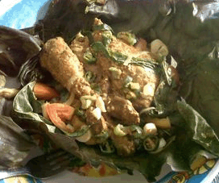
Bosan memasak ayam dengan resep di goreng terus? saya mencoba resep pepes ayam sunda ala mama saya...lalu memodifikasinya dengan daun singkong,karena males masak 2 kali.Cobain deh,,,pasti keluarga puas.
Bahan-bahan :
-Daging Ayam (separo dari 1 ekor ayam) 700 gram
-Daun singkong 1 ikat
-Daun pisang (untuk membungkus) Secukupnya
-Bawang merah 3 siung besar
-Bawang putih 2 Siung besar
-Kunyit seruas jari
-Jahe seruas jari
-Laos seruas jari
-Kemiri (digoreng terlebih dulu) 6 biji
-Sereh 2 batang
-Daun salam dan daun jeruk 6 lembar (masing2)
-Tomat 2 buah
-Cabe merah/ rawit 100 gram
-Garam, gula pasir, penyedap rasa Secukupnya
-Daun kemangi 1 ikat
Cara membuat :
1. Cuci daging ayam yang sudah di potong menjadi 6 bagian. rebus selama 20 menit tambahkan garam dan daun salam,setelah di rebus tiriskan
2. Bumbu yang di haluskan :bawang merah,bawang putih,kunyit,jahe,laos,kemiri,garam,gula pasir dan penyedap rasa
3. Bumbu yg di iris dan di tabur : tomat,cabe,sereh,kemangi,daun salam,daun jeruk
4. Uleni ayam yang sudah di rebus dengan bumbu halus,sisihkan
5. Siangi Daun singkong dari batangnya dan bersihkan Siapkan daun pisang untuk membungkus,bersihkan terlebih dahulu
6. Siapkan bahan pepesan dengan urutan sebagai berikut : daun pisang yang sudah di siapkan taro di atasnya daun singkong,lalu taro di atas daun singkong ayam bumbu,lalu taro bumbu iris di atas ayam tutup ayam dg daun kemangi,daun jeruk dan daun salam,
7. Bungkus masing2 potong ayam dengan daun pisang yang kuat dan padat,dengan susunan per bungkus seperti cara di atas.susun dalam dandang yang sudah di isi air untuk mengukus. Kukus selama 1 jam.Ayam pepes daun singkong siap dinikmati
Tips untuk resep ini :
Supaya ayam hasil pepesan dapet tulang yang lunak,terlebih dahulu ayam di rebus elama 20 menit,hasilnya di jamin lebih empuk ke tulang-tulangnya.
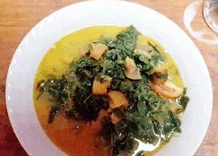
Biasanya bobor singkong ini kami tambah tempe ranum atau yang sudah agak kematangan, tetapi ketika itu kami tidak ada tempe di kulkas, adanya cecek lalu kita oba saja pakai itu eh ternyata enak juga. He he
Bahan-bahan :
-daun singkong 2 ikat
-cecek 100 gr
-kelapa 1/4 btr
-minyak goreng 2 sdm
bumbu :
-bawang merah 6 sg
-bawang putih 3 sg
-cabe plompong 2 bh
-kemiri 3 btr
-ketumbar 1/2 sdt
-kunyit 1 rsj
-lengkuas 2 rsj
-garam 1 sdt
-bumbu kaldu sapi 1/2 sdt
-gula 1/4 sdt
-daun jeruk 4 lbr
Cara membuat :
1. Cuci bersih daun singkong. Buang semua tangkai ambil daunnya saja lalu rebus sampai empuk. Lalu angkat buang air panasnya siram dengan air es. Peras sampai airnya hilang lalu potong lembut. Sisihkan
2. Cecek/kulit sapi cuci bersih potong dadu laku rebus sampai empuk. Sisihkan. Haluskan semua bumbu kecuali garam, bumbu kaldu, gula dan lengkuas. Parut kelapa untuk dibuat santan cair kira-kira 2 gls dan santan kental 1/2 gls.
3. Panaskan minyak goreng. Tumis bumbu halus masukkan lengkuas yang telah dimemarkan dan daun jeruk. Aduk sampai harum. Masukkan cecek lalu santan encer. Aduk keluar uapnya masukkan daun singkong iris.
4. Setelah mendidih masukkan santan kental, garam, gula dan bumbu kaldu. Aduk perlahan jangan sampai santan pecah. Setelah mendidih angkat siap untuk disajikan.
Tips untuk resep ini :
Cecek direndam dulu dengan air garam 1/2 jam sebelum dimasak lalu cuci bersih baru direbus, untuk menghilangkan bau lenggur cecek
Back
Gulai Daun Singkong Dadakan
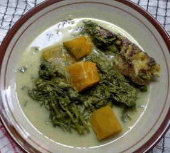
Karena masak dadakan maka jadilah gulai daun singkong dengan bahan seadanya. Tapi tetap enak kok :)
Bahan-bahan :
-Daun singkong 2 ikat
-Labu kuning 250 gram
-Ikan haruan 1 ekor ukuran sedang
-Santan encer 500 cc
-Santan kental 125 cc
Bumbu yg dihaluskan:
-Bawang putih 4 siung
-Bawang merah 6 butir
-Kunyit 1 ruas jari
-Lengkuas 2 cm
-Garam, gula dan lada Secukupnya
Cara membuat :
1. Remas-remas daun singkong yg sudah dicuci hingga agak hancur. Kupas labu kuning dan potong sesuai selera. Bakar ikan haruan yg sudah dibersihkan.
2. Didihkan santan encer. Setelah mendidih masukan daun singkong dan labu kuning. Masak sekitar 10 menit.
3. Kemudian masukan ikan haruan yang sudah dibakar tadi. Masukan juga bumbu yg dihaluskan. Aduk rata, tambahkan gula, garam dan lada secukupnya.
4. Terakhir masukan santan kental dan aduk sebentar. Gulai dadakan pun siap disajikan.
Back
Sayur Pucuk Ubi ( Daun Singkong )
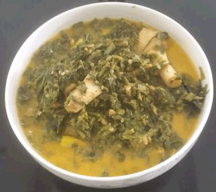
#resolusisehat Hari minggu malas pergi pasar....liat kebun ada pohon singkong lumayan byk.gk pake lama mikir... langsung saja saya bikin sayur ini dimkn sama sisa kerupuk kemaren.
Bahan-bahan :
-Daun singkong yg muda 2 ikat
-ebi rendam,tumbuk kasar 2 gr
-santan 500 ml
-daun salam 3 lembar
-cabe rawit yg ijo 10 buah
-laos,geprek 1 biji
-garam,lada dan gula pasir secukupnya
-minyak utk menumis 3 sdm
Bumbu halus (blender) :
-Bawang putih 3 siung
-bawang merah 4 butir
-cabe merah keriting 5 buah
-kemiri 1 biji
-kunyit 1/2 ruas
-terasi sedikit
Cara membuat :
1. Rebus daun singkong sampai lunak,tiriskan,potong2 agak halus,sisihkan
2. Tumis bumbu halus,tambahkan laos,ebi dan daun salam,oseng2 sampe harum
3. Tambahkan sedikit santan aduk lagi,masukkan daun ubi dan tambahkan sisa santan.Terakhir...bubuhkan lada,garam dan gula pasir serta cabe rawitnya,biarkan bbrp saat sampe meresap,icip2....selesai.
Tips untuk resep ini :
Kalau suka lebih berkuah tambahkan air jgn byk santan nanti berlemak jd gk sehat.Recook n share !!
Back
Daun Singkong Tumbuk "kering"
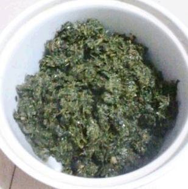
Kalau lihat penampakan resep ini mungkin gak ada yg ngiler. Aslinya suami dan Bapak saya ga mau makan ini sampe pake acara pemaksaan. Eh skg, heemmm ga usah ditanya deh mereka. Kalo udah ada menu ini langsung isi piring antara porsi nasi dan menu ini 1:2 hehheheeeee
Bahan-bahan :
-Daun singkong 300 gram
-Terasi 1 bks kecil
-Minyak untuk menumis 100 ml
-Gula Garam secukupnya
Bumbu Halus
-Cabe Merah 15 buah
-Bawang Merah 5 siung
-Bawang Putih 3 Siung
Cara membuat :
1. Tumbuk daun Singkong
2. Tumis Bumbu halus dan terasi hingga harum
3. Masukkan daun singkong yang sudah ditumbuk, aduk-aduk
4. Tambahkan 1 liter air
5. Tambahkan Gula garam
6. Masak hingga air mengering, sambil beberapa kali diaduk.
7. Siap disantap dengan sambal dan nasi panas
Tips untuk resep ini :
Daun singkong ditumbuk jgn terlalu lumat dan jangan menggunakan blender tapi gunakan ulekan batu atau besi karena akan berpengaruh pada teksturnya.
Back
Sayur Daun Singkong Pedas Gurih Tempo Dulu
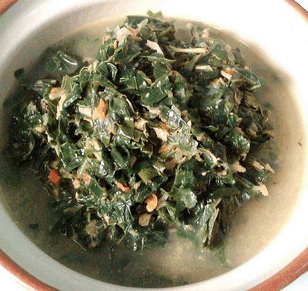
Ini resep warisan nenek, tiba-tiba saya kangen dengan masakan kesukaan saya waktu tinggal sama alm.nenek dulu, soalnya masakan ini rasanya khas banget, gurih dan pedas. walaupun saya masih anak kosan tapi tidak menghilangkan kesempatan saya untuk tetap mengasah ilmu masak saya, hehehe biar bisa jago masak kayak Kakak dan Alm.nenek saya.
Bahan-bahan :
-Daun Singkong (Ketela Pohon) 2 ikat
-Santan kelapa 5 gelas
-Air 1 Gelas
Bumbu Yang Dihaluskan:
-Bawang Putih 8 siung
-Bawang Merah 10 siung
-Cabe Rawit Sesuai Selera
-Kemiri 3 biji
-Kunyit di bakar 1 ruas jari
Bumbu Pelengkap:
-Garam Secukupnya
-Gula 1 sdm
-Penyedap Rasa Ayam bila suka 1 sachet
-Udang Germut (Urang Dawu) 2 sdm
-Daun salam 4 lembar
-Lengkuas dimemarkan 2 ruas jari
Cara membuat :
1. Petik daun singkong(ambil daunnya saja), kemudian cuci dan rebuslah air hingga mendidih, kemudian masukan daun singkong ke dalam air yng mendidih, rebus selama kurang lebih 10 menit hingga daun sedikit lunak.
2. siapkan bumbu yang akan di haluskan, haluskan bumbu tersebut. Setelah daun singkong lunak, tiriskan dan siram dengan air dingin.
3. Setelah di tiriskan dan di siram air dingin, daun singkong tersebut di iris-iris (di rajang).
4. panaskan minyak di wajan, setelah itu masukan bumbu yang telah di haluskan dan bumbu2 pelengkap, setelah bumbu harum dan layu, masukan air.
5. Setelah itu masukan daun singkong yang di iris-iris tadi, sambil di aduk biar merata, sekiranya air sudah meresap masukan santan, dan dicicipin apabila kurang asin bisa ditambahin garam.
6. tunggu hingga bumbu meresap kedalam daun singkong, kira2 10 menit, sampai mendidih dan meresap. Akhirnya Daun Singkong Kuah Pedas Tempo Dulu siap di santap. Semoga bermanfaat, Terimakasih.
Tips untuk resep ini :
Santannya kalau pakai yang siap saji kemasan cair kecil itu, bisa pakai 2 bungkus ya. oh ya saya punya Tips kalau mau menyimpan santan sendiri untuk di buat beberapa hari kemudian, lebih baik santan sudah di peras, terus dimasukin plastik es, kemudian di simpan kedalam freezer biar membeku dan awet tidak basi. waktu saya memasak sayur ini juga menggunakan santan yang saya simpan di freezer. Thanks
Back
Gulai Kuning Asam Daun Ubi (Singkong)
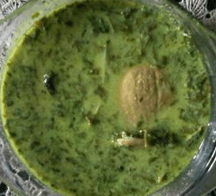
Salah satu masakan yang sering dimasak. Walaupun sedikit agak ribet, tapi enak kok! ^_^ Silakan coba sendiri.
Bahan-bahan :
-daun singkong 1 ikat
-jengkol 5 buah
-rimbang/takokak 1 genggam
-ikan teri belah 1 genggam
-santan jadikan 5 gelas dari 1 butir kelapa
-minyak goreng secukupnya
-garam secukupnya
-kaldu ayam bubuk secukupnya
-daun salam 2 lembar
-daun jeruk 2 lembar
-serai 1 batang
-lengkuas 2 cm, geprek
-asam potong/asam kandis 3 keping
Bahan yang dihaluskan
-ketumbar 1 sdt
-bawang merah 5 siung
-bawang putih 2 siung
-kemiri 2 butir
-jahe 1 cm
-kunyit 3 cm
Cara membuat :
1. Rebus sebentar daun singkong sampai layu dan warnanya berubah jadi hijau tua. Angkat, tiriskan, tumbuk (saya pake blender) sampai agak halus, sisihkan.
2. Rebus jengkol sampai lunak, lalu geprek tiap permukaan kepingnya
3. Siapkan wajan, masukkan minyak goreng. Tumis bumbu yang dihaluskan. Tambahkan daun salam, daun jeruk, serai, lengkuas dan asamnya.
4. Masukkan juga ikan teri dan rimbang. Aduk-aduk. Kalau sudah harum, masukkan santan. Aduk-aduk. Tunggu sampai mendidih, lalu masukkan jengkol dan daun singkong.
5. Beri garam dan kaldu ayam bubuk. Koreksi rasa. Masak sampai mendidih lagi. Angkat dan sajikan.
Back
Rollade Tahu Isi Daun Singkong
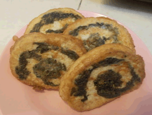
kel. di rumah bosan dengan tahu yang di goreng, tak coba di bikin rollade, ternyata enak juga, monggo yang mau nyoba, mudah kok..
Bahan-bahan :
-tahu putih 300 gram
-daun singkong 100 gram
-telur 1 butir
-bawang putih 2 butir
-merica bubuk 1/2 sendok teh
-garam secukupnya
-gula pasir secukupnya
-kaldu bubuk secukupnya
-ebi 1/2 sendok teh
Pelapis:
-telur kocok lepas 2 butir
Cara membuat :
1. rebus daun singkong sampai lunak beri garam, biar tidak hambar, kalau sudah matang sisihkan
2. haluskan bawang putih, ebi, gula, dan garam
3. hancurkan tahu, setelah itu masukkan bumbu yang telah di haluskan, tambahkan merica bubuk, kaldu bubuk, telur aduk2 sampai rata
4. siapkan daun/ plastik pembungkus, ratakan tahu di atas plasti, beri daun singkong di atasnya, gulung padatkan, rapatkan dengan tali ujung2nya
5. kukus lebih kurang 10 - 15 menit, setelah matang, angkat dinginkan
6. kalau sudah dingin baru bisa di potong-potong,
7. panaskan minyak, lumuri rollade dengan telur, goreng sampai kecoklatan, sajikan
Tips untuk resep ini :
Pilih daun singkong muda, agar kalau di rebus cepat lunak, dan mudah di potong-potong
Back
Oseng-oseng Daun Singkong Kacang Panjang
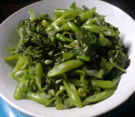
Bikin oseng-oseng dgn bahan seadanya.
Bahan-bahan :
-Daun singkong 1 ikat
-Kacang panjang 10 buah
-Bawang merah 4 butir
-Bawang putih 2 siung
-Garam Secukupnya
-Gula Secukupnya
-Penyedap rasa (bila suka) Secukupnya
-Minyak goreng 2 sendok makan
-Air Secukupnya
Cara membuat :
1. Siangi daun singkong dan cuci bersih, tiriskan. Kemudian remas-remas daun singkong dgn garam sampai agak hancur. Potong serong kacang panjang.
2. Tuang minyak goreng diwajan dan tumis bawang merah dan bawang putih sampai wangi.
3. Setelah wangi masukkan daun singkong, aduk rata dan tambahkan sedikit air. Masak kurleb 15 menit.
4. Setelah sekitar 15 menit masukkan kacang panjang, garam, gula dan penyedap. Aduk rata dan masak sampai sayuran matang. Angkat dan sajikan.
Tips untuk resep ini :
Kalau suka pedas bisa ditambahin cabe.
Back
Rolade Daun Singkong Sederhana
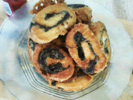
Nyoba bikin rolade daun singkong resep bundaku
Bahan-bahan :
-daun singkong secukupnya
-tahu putih (saya pake tahu sumedang mentah) 200 gr
-bawang putih 2 siung
-telur 1 butir
-lada,garam ,gula secukupnya
-penyedap rasa secukupnya
-daun pisang untuk membungkus
-tepung terigu 4 sdm
-tepung kanji 2 sdm
-minyak goreng untuk menggoreng adonan
Cara membuat :
1. Rebus daun singkong sampai empuk,kemudian tiriskan,usahakan merebusnya utuh jgn di potong-potong
2. Haluskan bawang,putih,lada,garam,gula,
3. Hancurkan tahu,campur dengan bumbu halus,telur dan tepung kanji,aduk rata,gunanya tepung kanji adalah untuk membuat adonan kesat tak berair
4. Pipihkan adonan tahu diatas daun pisang yg sudah layu,kemudian tata daun singkong diatasnya,gulung pelan2 agar adonan tidak beraktakan
5. Sematkan ujung-ujung daun pisang dengan lidi,kemudian kukus kurang lebih 40menit,setelah layu,angkat dan dinginkan
6. Setelah dingin,potong setebal 1 cm,usahakan pelan2 karena daun singkong agak alot,
7. Buat adonan tepung+air ,beri penyedap rasa sedikit,celupkan potongan tahu ke dalam adonan tepung kemudian goreng hingga kecoklatan dan sajikan selagi panas/hangat
Tips untuk resep ini :
Bisa untuk camilan atau lauk
Back
Javanese Beef Cassava Leaf (Sapi Daun Singkong)
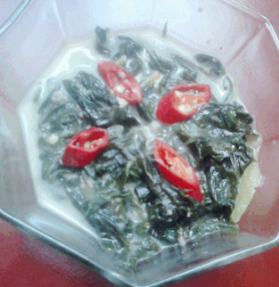
Awalnya mau pake ebi atau ikan teri, request dari nenek katanya pake daging sapi giling juga enak.
Bahan-bahan :
-daging sapi giling 100 gram
-daun singkong 1 ikat
-santan 300 ml
-kaldu sapi 300 ml
-bawang putih 3 siung
-bawang merah 6 siung
-ketumbar sangrai 1 sendok teh
-kemiri 1 buah
-kunyit sebesar kuku kelingking
-tomat setengah buah ukuran besar
-cabe merah 2 buah
-salam 2 lembar
-sereh 1 batang
-lengkuas sebesar jempol jari
-garam secukupnya
-gula secukupnya
-minyak goreng 3 sendok makan
Cara membuat :
1. cuci daun singkong yang telah di pilih dari batang sebanyak tiga kali, lalu rebus. setelah daun singkong layu, tekstur lebih lembut dan berwarna lebih pucat, angkat lalu bilas dengan air.
2. rebus daging giling dengan 500 ml air, angkat setelah daging berwarna lebih muda. pisahkan daging dengan kaldu.
3. haluskan bawang merah, bawang putih, ketumbar, kemiri dan kunyit.
4. memarkan lengkuas dan sereh
5. potong memanjang tomat dan cabe merah
6. panaskan wajan, beri minyak goreng. tunggu minyak memanas. tumis bumbu halus hingga harum, masukkan daun salam, lengkuas dan sereh, aduk hingga daun salam layu lalu masukkan cabe dan tomat, aduk.
7. masukkan daging sapi giling, aduk sebentar lalu masukkan kaldu. setelah tercampur, masukkan santan sedikit demi sedikit, aduk terus santan agar tidak pecah. tambahkan garam dan gula secukupnya.
8. terakhir masukkan daun singkong dan tunggu hingga kuahnya menyusut. angkat dan siap dihidangkan.
Tips untuk resep ini :
Air rebusan harus menutupi seluruh bagian daun singkong agar seluruh bagian daun matang. jangan gunakan lagi air rebusan!
Back
Gulai Singkong (Medan Punya)
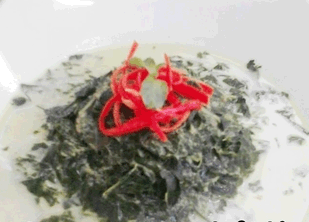
#kreasisantan
Bahan-bahan :
-santan encer 250 ml
-santan kental 100 ml
-daun singkong 100 grm tumbuk
-bunga kecombrang 1/2 bunga
-tongkol/teri medan 50 grm
-lengkuas 1 cm
-serai 1 btng
bumbu halus
-bawang merah 3 buah
-bawang putih 3 buah
-cabai merah 3 buah
-jahe 1 cm
-kunyit bakar 2 cm
-garam 1 sdt
Cara membuat :
1. rebus daun singkong di air mendidih selama 30 detik, angkat tumbuk.
2. haluskan bumbu halus, di tambah bunga kecombrang dan teri medan, haluskan bersamaan.
3. didhkan santan encer, srai, lengkuas, dan bumbu halus sambil di aduk terus.
4. setelah mendidih dan rasanya pas, saring kuah dan didihkan kembali.
5. tambahkan daun singkong tumbuk, aduk terus.
6. tamhakan santan kental lalu masak sambil di aduk hingga kuah sedikit berminyak. sajikan
Tips untuk resep ini :
Bunga kecombrang memberikan aroma wangi, dan untuk teri medannya, memberikan cita rasa gurih umami :) selamat mencoba
Back
Daun Ubi Tumbuk Kampung (Bulung Gadung Duda)
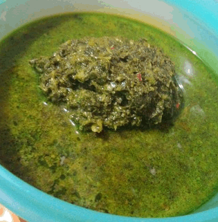
Masakan khas dari daerah saya, Tapanuli Selatan. Edisi rindu kampung dan keluarga....
Bahan-bahan :
-Daun singkong 200 gram
-Rimbang 100 gram
-Lengkuas dikeprek 1 jempol
-Sereh dikeprek 2 batang
-Cabe merah 3 buah
-Cabe rawit 5 buah
-Bawang merah 4 siung
-Bawang putih 1 buah
-Santan 450 ml
-Udang rebon/ebi secukupnya
-Garam secukupnya
Cara membuat :
1. Cuci bersih sayur. Ambil lesung, tumbuk setengah halus daun singkong, rimbang, cabe rawit+merah, bawang merah+putih.
2. Sambil menunggu daun singkong ditumbuk selesai, didihkan santan yang sudah diberi garam, lengkuas, sereh dan udang ebi. Setelah itu masukkan daun singkong. Aduk sampai mendidih, kemudian tutup. Kurang lebih 8-10 menit.
3. Icip-icip setelah garam dirasa pas, siap untuk disajikan.
Tips untuk resep ini :
Lebih enak bila ditambahkan ikan salai, terong telunjuk/terong manggis hijau dan kecombrang (kincung). Lengkap......
Back
Bakwan Daun Singkong dengan Cabe Kuah
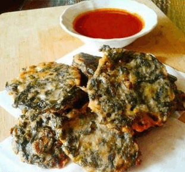
Selain wortel, kol, jagung dan toge, daun singkong pun enak dijadikan sebagai sayuran pada bakwan. Apalagi jika dinikmati dengan cabe kuah, hhmmm... Menikmati bakwan dengan cabe kuah memang kebiasaan yang umum di kampung saya di Padang sana.
Bahan-bahan :
-Daun singkong 2 ikat
-Daun bawang, iris 2 batang
-Tepung terigu 8 sdm atau bisa juga lebih
-Tepung beras 4 sdm
-Minyak untuk menggoreng secukupnya
-Air secukupnya
Bumbu halus
-Bawang merah 4 siung
-Bawang putih 2 siung
-Kemiri 3 butir
-Merica 1 sdt
-Garam secukupnya
-Gula secukupnya
Cabe Kuah
-Cabe giling 1 sdm
-Bawang putih, haluskan 1 siung
-Gula pasir 1/2 sdt
-Gula merah 25 gr
-Cuka masak 1 sdt
-Air 1/2 gelas belimbing
-Garam secukupnya
Cara membuat :
1. Petik pucuk daun singkong, cuci bersih kemudian rebus sampai empuk. Keluarkan dari air rebusan dan peras sampai air nya kering. Iris kasar daun singkong.
2. Campur daun singkong rebus, daun bawang, bumbu halus, tepung terigu dan tepung beras. Aduk rata.
3. Beri air sedikit-sedikit sambil diaduk rata. Adonan jangan terlalu encer dan jangan terlalu kental. Jika terlalu encer tambahkan terigu dan jika terlalu kental tambahkan air.
4. Lakukan tes rasa. Jika telah pas, goreng bakwan sampai berwarna kecoklatan. Angkat dan tiriskan.
5. Untuk cabe kuah : campur semua bahan dan rebus sampai mendidih dan kuah mengental. Lakukan tes rasa. Matikan kompor.
6. Bakwan daun singkong siap dinikmati dengan cabe kuah.
Tips untuk resep ini :
Untuk cabe kuah, jika cabe gilingnya sudah digarami, maka tidak perlu lagi menambahkan garam.
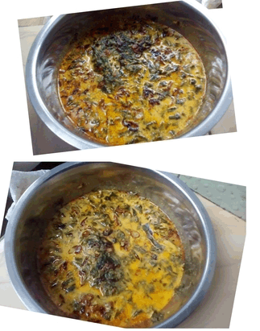
Sayuran di warung tinggal ada daun singkong aja heheee uda kesiangan akhrinya masak sayur ini deh sekalian ikutan lg share #kreasisantan
Bahan-bahan :
-Daun singkong 1 ikat
-Santan 1 gayung
Bumbu yang di haluskan
-Ketumbar 1 sdm
-Kemiri 2 btr
-Kunyit 1/2 ruas
-Jahe 1/4 ruas
-Lengkoas 1/2 ruas
-Bawang merah 6 siung
-Bawang putih 2 siung
-Cabai rawit 10 buah
-Ebi 1 sdm
-Royko secukupnya
Cara membuat :
1. Rebus daun singkong selama 30 menit,lalu tumis bahan yg di haluskan sampai harum,masukkan santan kemudian daun singkongnya masak sampai meletup letup
Back
Sayur Singkong Gurih Sedapp
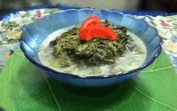
Sebenarnya masak daun singkong gara2 ada pohon singkong di belakang rumah yg banyak daun mudanya.mubazir kalo g digunakan.berhubung anakku g suka pedes akhirnya dibuat gurih aja.hmm lumayan hemat khan #kreasisantan
Bahan-bahan :
-daun singkong 300 gr
-santan kental 300ml
-santan sedang 400ml
-sere 1 buah digeprek
-kemiri 2 buah
-bawang merah 4 siung
-bawang putih 3 siung
-ketumbar 1 sdt sangrai
-merica 1/2 sdt
-jahe 1 ruas digeprek
-bawang pre 1 batang di iris tipis
-daun jeruk purut 2 lembar
-garam secukupnya
-gula 1 sdt
Cara membuat :
1. Petiki daun singkong yg masih muda dan rebus selama 30 menit dan beri garam supaya warnanya ttep hijau
2. Sementara singkong direbus, buat bumbu haluskan bawang merah,bawang putih yg telah digoreng sebelumnya, garam, gula, kemiri.merica dan ketumbar.
3. Setelah daun singkong matang,buang airnya dan peras kemudian di iris 2cm.hal ini bertujuan agar daunnya tidak panjang waktu diambil
4. Masak santan sedang bersama bumbu halus.jahe.sere,bawang pre dan daun jeruk purut.masak sampai mendidih
5. Setelah mendidih.masukkan daun singkong dan santan kental.dicicipi rasanya.tunggu sebentar lalu angkat dan sajikan
Tips untuk resep ini :
Pakai daun singkong tahunan yg daunnya lebar2 biar cepet empuk
Back
Sayur Daun Singkong PEDA peuteuy CENGEK
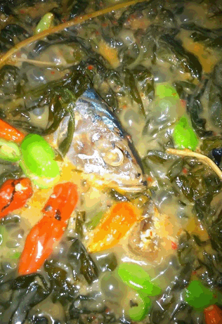
Saya lebih suka memadukan.ikan.asin peda sebagai pengganti.ikanTeri, rasanya.lebih nendang... ;) #kreasisantan
Bahan-bahan :
-Daun singkong muda 2 ikat
-Santan kara 400 gr
-Petai (optional) 1 papan
-Ikan asin peda putih 1 ekor
-Bawang putih 5 siung
-Bawang merah 10 siung
-Cabai keriting merah 10 bh
-Cabai rawit merah 10 biji
-kemiri 2 bh
-sereh 3 batang
-daun.salam 2 lbr
-jahe 2 cm
-air secukupnya
-gula secukupnya
Cara membuat :
1. Remas Remas daun singkong Dengan garam, Diamkan sekitar 1/2 jam. siapkan bumbu untuk dihaluskan.
2. Cuci bersih daun singkong, lalu rebus daun singkong sampai matang. Sambil.menunggu, haluskan bwg Merah, bwg putih, cabai keriting, kemiri Dan jahe menggunakan.blender.
3. Cuci ikan peda Dan potong potong. panaskan minyak di wajan, lalu goreng ikan asin peda sampai setengah matang.
4. Masukkan bumbu halus, Salam, sereh, sedikit gula, lalu tumis.
5. Masukkan santan kara, aduk aduk, tambahkan air.
6. Masukkan daun singkong yg sudah Direbus sampai matang, aduk.
7. terakhir, tambahkan petai Dan cabai rawit merah untuk.penambah selera sekitar 10 menit Sebelum diangkat agar Masih segar. GAK.perlu.pakai garam Yaa krn sudah asin Dari peda.
8. Sayur daun singkong PEDA peuteuy cengek siap disantap!,, dijamin nagiihh,,, wekekek.
Tips untuk resep ini :
GAK perlu pakai garam ya boo eboo. Karrna sudah asin Dari.ikan peda... Masukkan petai Dan rawiy di.Akhir agar rasanya Masih segar. Untuk.Menambah selera pedass, rawit bisa di potong potong.
Back
Sayur Daun Singkong Kuah Santan
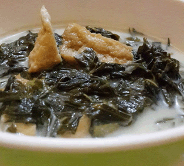
Mencoba alternatif sayuran berkuah dengan #kreasisantan untuk si kecil. Kandungan kencurnya membuat nafsu makan si kecil meningkat. Rasanya yang gurih membuat si kecil makan dengan lahap.
Bahan-bahan :
-Daun singkong 1 ikat
-Tahu sumedang atau tahu air 6 pcs
-Santan instan 65 ml
-Bawang merah 6 siung
-Bawang putih 3 siung
-Kencur 5 cm
-Kemiri 3 butir
-Ketumbar 1/2 sdt
-Gula pasir secukupnya
-Garam secukupknya
-Air 500 ml
-Daun salam 2 lembar
-Daun serai 1 lembar, ambil putihnya, geprek
-Minyak sayur untuk menumis 3 sdm
Cara membuat :
1. Petik daun singkong, cuci bersih lalu rebus hingga empuk. Kurang lebih 25 menit. Angkat, tiriskan dan potong-potong.
2. Haluskan bawang merah bawang putih, kemiri, kencur dan ketumbar. Tumis bumbu halus hingga harum. Masukkan daun salam dan serai.
3. Masukkan tahu yang sudah dipotong dadu, tambahkan air, tunggu hingga mendidih.
4. Tambahkan santan dan daun singkong yang sudah dipotong2. Tambahkan gula garam sesuai selera. Koreksi rasa.
Tips untuk resep ini :
Jika suka kuah yang kental, kurangi airnya. Jangan terlalu banyak santan karena bisa membuat rasanya jadi eneg
Terima kasih untuk pak teguh dot com yang telah memaparkan banyak resep daun singkong secara lengkap. Kini beberapa resepnya telah saya muat dalam bentuk aplikasi android yang bisa di dapatkan di play store. Dan aplikasi ini dapat di nikmati secara offline, jadi tanpa koneksi internet pun anda bisa menikmati aplikasi ini.
www.pakteguh.com
-Pak Teguh
Terima kasih juga buat yang udah download aplikasi Aneka Resep Daun Singkong & jangan lupa di kasih rating ya dan di komen biar bisa dijadikan masukan ^_^